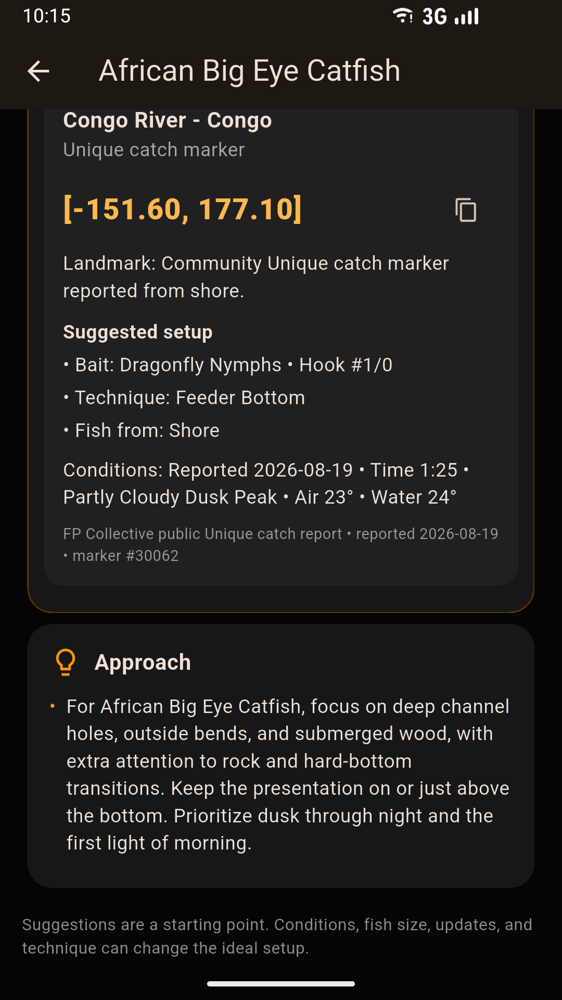
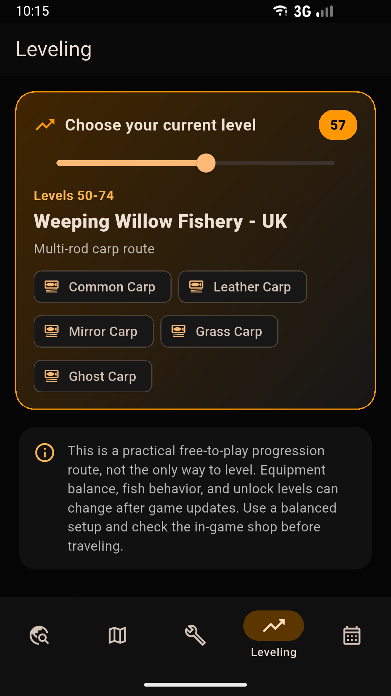
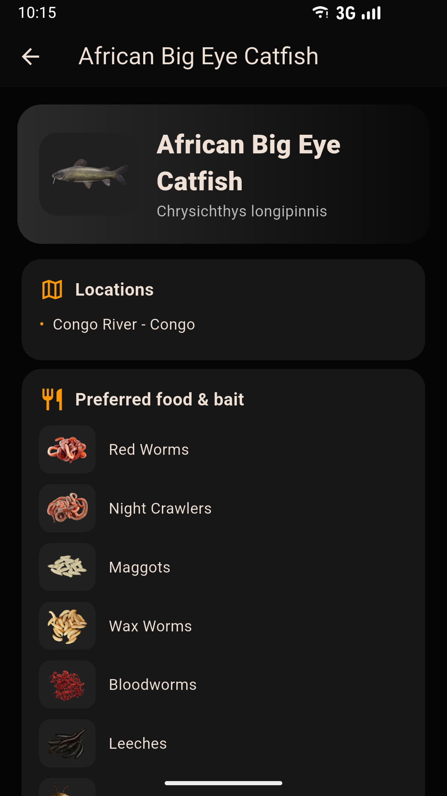
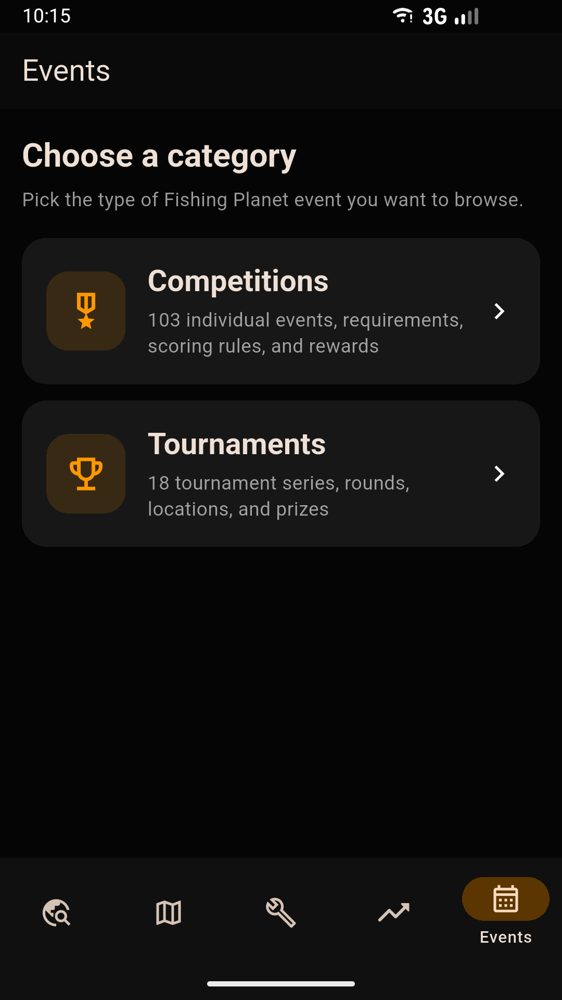

01
Fish hotspot playbook
Open a fish to find catch-marker coordinates, target class, suggested bait or lure, hook, technique, fishing position, conditions, and a species-specific approach.
Coordinates + complete setupFree Android companion guide
Jump straight to fish hotspot coordinates, suggested setups, conditions, and detailed approaches—then move the level scale for a complete route from 1 to 105.


See the guide in action
See the standout hotspot and leveling tools first, followed by the complete fish, location, tackle, and events reference.
Everything in one place
Built to answer the questions that come up while you are actually playing.
01
Open a fish to find catch-marker coordinates, target class, suggested bait or lure, hook, technique, fishing position, conditions, and a species-specific approach.
Coordinates + complete setup02
Move the scale to any level from 1 through 105 for a recommended location, target fish, setup, method, alternatives, and credit-saving advice.
03
Browse species, weight classes, values, preferred food and bait, and recommended hook ranges before making a setup.
04
Compare rods, reels, lines, lures, hooks, rigs, and equipment with practical specifications and level requirements.
05
Explore waterways by required level, travel costs, daily fees, licenses, available fish, and location-specific guidance.
Plan before traveling06
Review competition and tournament requirements, formats, rewards, and useful preparation details.
Competitions + tournamentsInside the app
Swipe through the actual Android experience.









Swipe to see more
Quick installation
Fishing Planet Guide is currently distributed as an APK through GitHub Releases. Android may ask you to approve installation from your browser or file manager.
Download latest APKTap the button and approve the APK download if your browser asks.
Tap the finished download or open it from your Downloads folder.
If prompted, allow installs from the browser or file manager you used.
Complete the installation, then open Fishing Planet Guide.
Quick answers
Everything players need to know before downloading the Android companion.
A free, unofficial Android companion built around fish hotspot coordinates, complete suggested setups, and an interactive leveling route from level 1 through 105.
Yes. The current Android APK is free to download from the project's public GitHub Releases page.
Download the latest APK, open it from your browser or Downloads folder, allow installation from that source if Android asks, and tap Install.
No. This is an independent, unofficial community reference created by Smeltser Technologies. Fishing Planet names and trademarks belong to their respective owners.
Built with the community
Help more Fishing Planet players spend less time searching and more time fishing. Found an incorrect stat or missing hotspot? Feedback is always welcome.